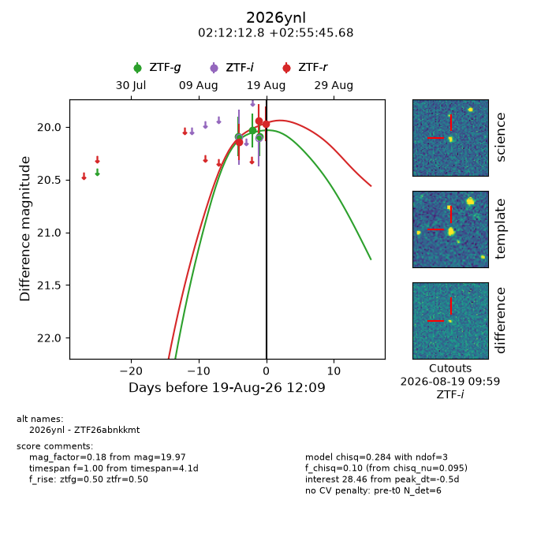
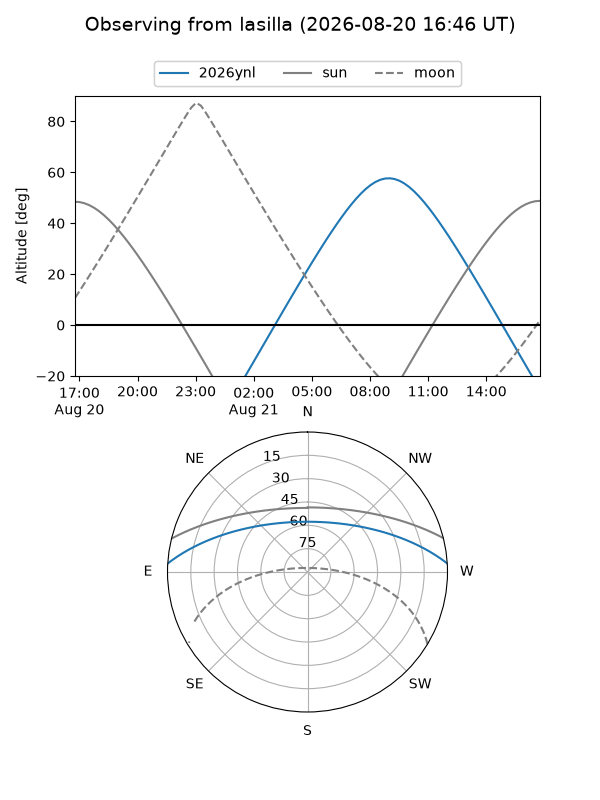
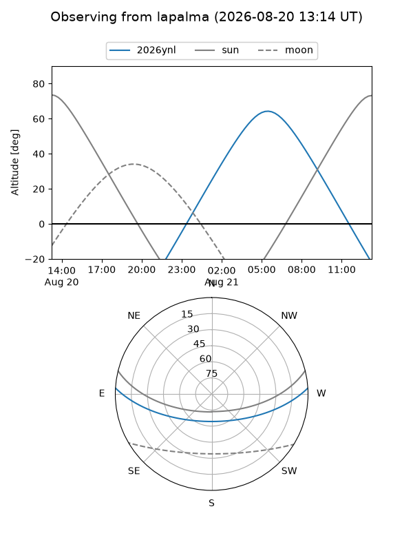
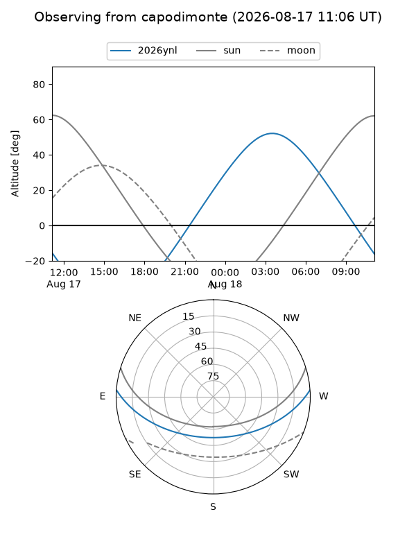
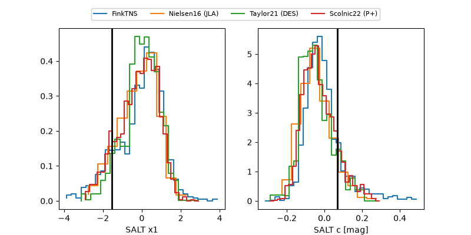

2026ynl
Target 2026ynl at 2026-08-19 12:12
Aliases and brokers:
FINK-ZTF: ztf.fink-portal.org/ZTF26abnkkmt
Lasair-ZTF: lasair-ztf.lsst.ac.uk/objects/ZTF26abnkkmt
ALeRCE-ZTF: alerce.online/object/ZTF26abnkkmt
YSE-PZ: ziggy.ucolick.org/yse/transient_detail/2026ynl
TNS name: wis-tns.org/object/2026ynl
Direct TNS query: direct search
alt names
ZTF26abnkkmt (ztf,fink_ztf)
2026ynl (tns,yse)
Coordinates:
equatorial (ra, dec) = 33.0535,+2.92935
equatorial (HMS+DMS) = 02:12:12.83,+02:55:45.68
galactic (l, b) = (159.0256,-54.18255)
Flags:
TNS type: nan
peak dt: -0.5
Photometry:
last ztfg=20.09, ztfr=19.97
3 ztfg, 3 ztfr detections
Lightcurve

Visibility



Additional plots
